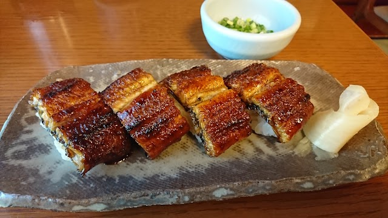
| 営業時間 | 月・火・木・金・土・日 11:30〜14:00, 16:30〜20:30 |
|---|---|
| 定休日 | 水曜 |
| 住所 | 愛知県名古屋市熱田区神戸町５０３ |
| 予約 | 可 — ☎ 052-671-8686 ／ 公式サイト |
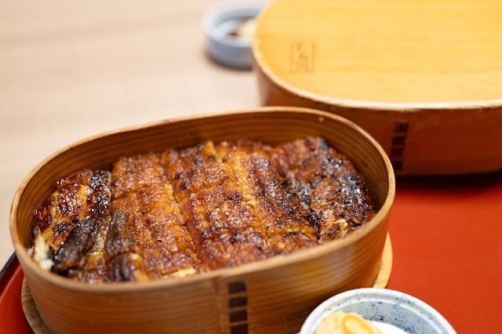
| 営業時間 | 月・火・水・木・金 11:00〜14:30, 17:00〜21:30 ／ 土・日 11:00〜15:00, 17:00〜21:30 |
|---|---|
| 定休日 | なし(要最終確認) |
| 住所 | 愛知県名古屋市西区城西４丁目２０−１２ |
| 予約 | 可 — ☎ 052-524-1415 ／ 公式サイト |
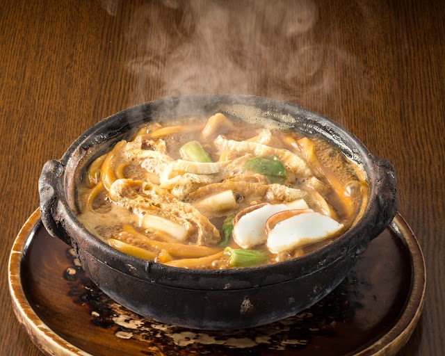
| 営業時間 | 月・木・金・土・日 11:00〜15:00, 17:00〜20:00 |
|---|---|
| 定休日 | 火・水曜 |
| 住所 | 愛知県名古屋市中区栄３丁目１２−１９ |
| 予約 | 要確認 — ☎ 052-241-5617 ／ 公式サイト |
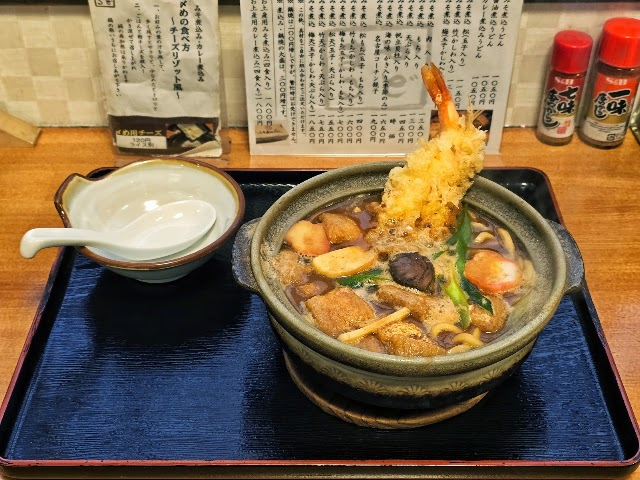
| 営業時間 | 月・火・水・金 11:00〜15:00, 17:00〜19:00 ／ 木 11:00〜15:00 ／ 土 11:00〜14:00 |
|---|---|
| 定休日 | 日曜 |
| 住所 | 愛知県名古屋市東区泉１丁目１８−３３ |
| 予約 | 要確認 — ☎ 052-971-2068 ／ 公式サイト |
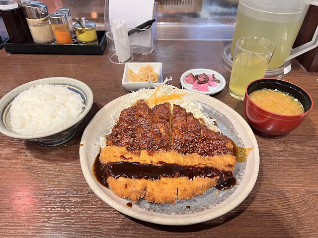
| 営業時間 | 月・火・水・木・金・土・日 11:00〜21:00 |
|---|---|
| 定休日 | なし(要最終確認) |
| 住所 | 愛知県名古屋市中区大須３丁目６−１８ |
| 予約 | 可 — ☎ 052-252-8810 ／ 公式サイト |
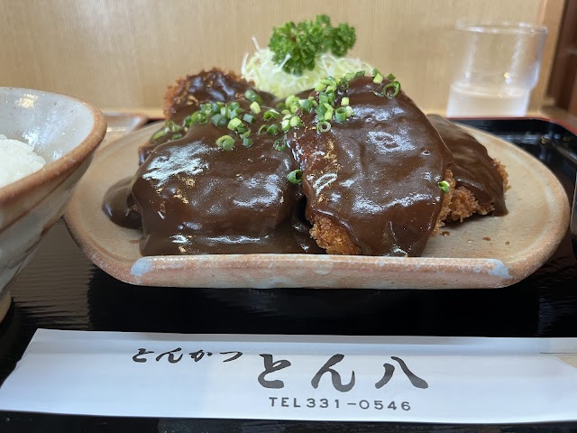
| 営業時間 | 月・金・土 11:00〜13:45, 17:00〜20:00 ／ 水・木 11:00〜13:45 |
|---|---|
| 定休日 | 火・日曜 |
| 住所 | 愛知県名古屋市中区千代田３丁目１７−１５ |
| 予約 | 要確認 — ☎ 052-331-0546 ／ 公式サイト |
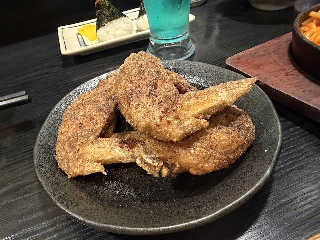
| 営業時間 | 月・火・水・木・金 16:00〜23:15 ／ 土 15:00〜0:15 ／ 日 15:00〜23:15 |
|---|---|
| 定休日 | なし(要最終確認) |
| 住所 | 愛知県名古屋市中区栄４丁目９−６ |
| 予約 | 可 — ☎ 052-242-1342 ／ 公式サイト |
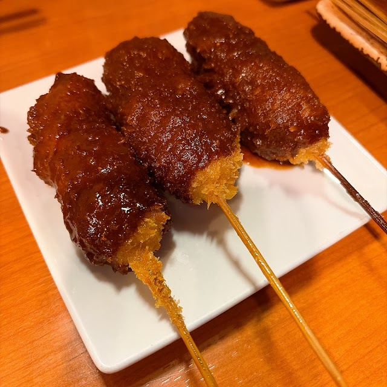
| 営業時間 | 月・火・水・木・金 17:00〜22:00 |
|---|---|
| 定休日 | 土・日曜 |
| 住所 | 愛知県名古屋市中区栄２丁目１−１９ |
| 予約 | 要確認 — ☎ 052-231-5977 ／ 公式サイト |
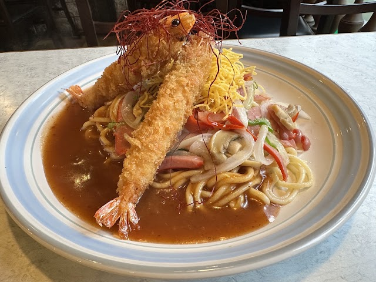
| 営業時間 | 火・水・木・金・土 11:00〜15:00, 17:00〜21:00 ／ 日 11:00〜15:00 |
|---|---|
| 定休日 | 月曜 |
| 住所 | 愛知県名古屋市中区栄３丁目１０−１１ サントウビル ２階 |
| 予約 | 要確認 — ☎ 052-241-5571 ／ 公式サイト |
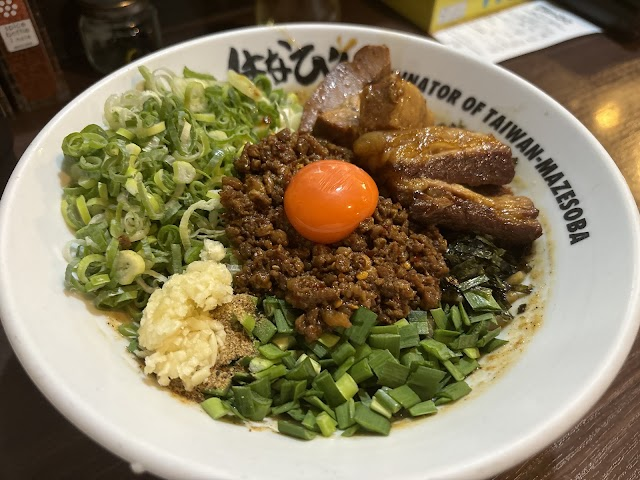
| 営業時間 | 月・火・水・木・金 11:30〜14:00, 18:00〜21:00 ／ 土・日 11:00〜14:30, 18:00〜21:00 |
|---|---|
| 定休日 | なし(要最終確認) |
| 住所 | 愛知県名古屋市中川区高畑１丁目１７０ |
| 予約 | 要確認 — ☎ 052-354-1119 ／ 公式サイト |
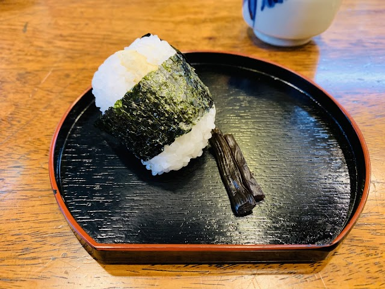
| 営業時間 | 月・木・金・土・日 8:30〜18:00 |
|---|---|
| 定休日 | 火・水曜 |
| 住所 | 愛知県名古屋市中区大須４丁目１０−８２ |
| 予約 | 要確認 — ☎ 052-262-0466 ／ 公式サイト |
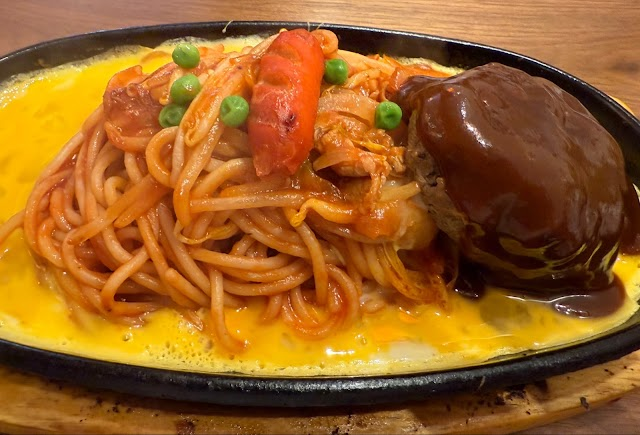
| 営業時間 | 月 10:30〜15:00 ／ 火・水・木・日 10:00〜15:00 |
|---|---|
| 定休日 | 金・土曜 |
| 住所 | 愛知県名古屋市東区葵３丁目２−３０ |
| 予約 | 要確認 — ☎ 052-935-1653 |
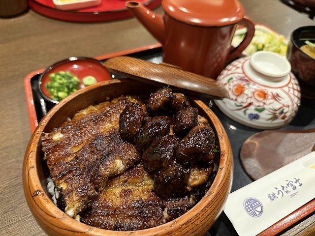
| 営業時間 | 月・火・水・木・金・土・日 11:00〜14:30, 17:00〜20:30 |
|---|---|
| 定休日 | なし(要最終確認) |
| 住所 | 愛知県名古屋市昭和区白金１丁目１−４ 1階 |
| 予約 | 可 — ☎ 052-881-0067 ／ 公式サイト |
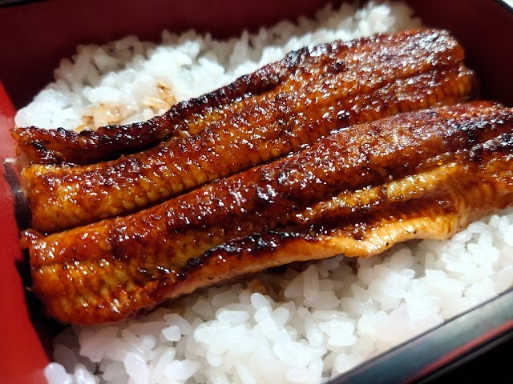
| 営業時間 | 火・水・木・金・土 11:00〜14:30, 17:00〜21:00 ／ 日 11:00〜14:30, 16:30〜21:00 |
|---|---|
| 定休日 | 月曜 |
| 住所 | 愛知県名古屋市瑞穂区豊岡通３丁目４０ |
| 予約 | 可 — ☎ 052-851-2632 ／ 公式サイト |
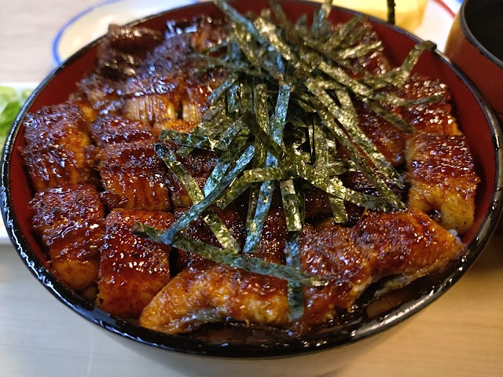
| 営業時間 | 月・火・木・金・日 11:30〜14:00, 17:00〜21:00 ／ 水 17:00〜21:00 |
|---|---|
| 定休日 | 土曜 |
| 住所 | 愛知県名古屋市中村区名駅南１丁目２−１３ |
| 予約 | 可 — ☎ 052-541-0760 |
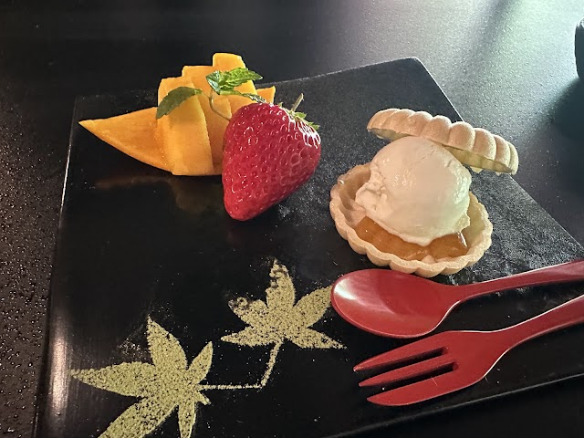
| 営業時間 | 月・火・木・金・土・日 12:00〜15:00, 18:00〜21:00 |
|---|---|
| 定休日 | 水曜 |
| 住所 | 愛知県名古屋市昭和区広路町石坂29 |
| 予約 | 可 — ☎ 052-831-1585 ／ 公式サイト |
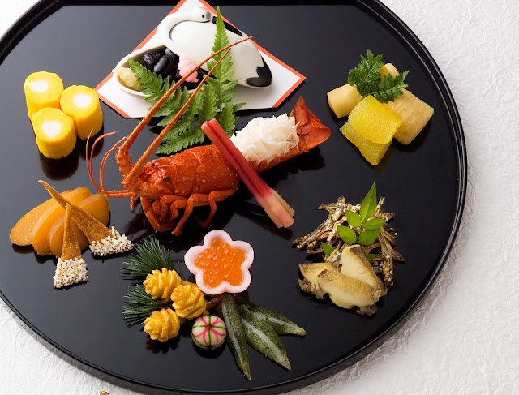
| 営業時間 | 月・火・水・木・金・土・日 11:30〜15:00, 17:30〜22:00 |
|---|---|
| 定休日 | なし(要最終確認) |
| 住所 | 愛知県名古屋市東区白壁４丁目８５ |
| 予約 | 可 — ☎ 052-931-8506 ／ 公式サイト |
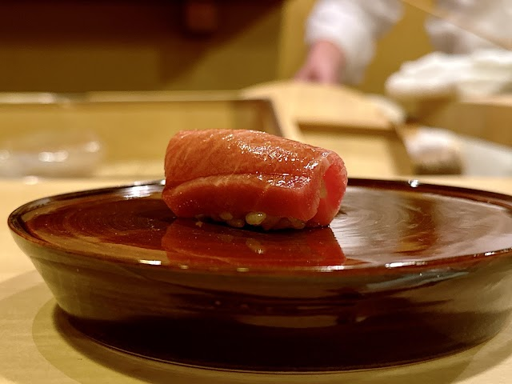
| 営業時間 | 火・土 17:30〜20:00 ／ 水・木・金・日 12:00〜14:00, 17:30〜20:00 |
|---|---|
| 定休日 | 月曜 |
| 住所 | 愛知県名古屋市中川区八幡本通２丁目２０ |
| 予約 | 要確認 — ☎ 052-353-6005 |
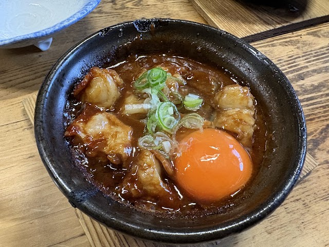
| 営業時間 | 月・火・水・木・金 15:45〜21:15 ／ 土 15:45〜20:00 |
|---|---|
| 定休日 | 日曜 |
| 住所 | 愛知県名古屋市中区栄１丁目５−６ |
| 予約 | 可 — ☎ 052-231-1909 ／ 公式サイト |
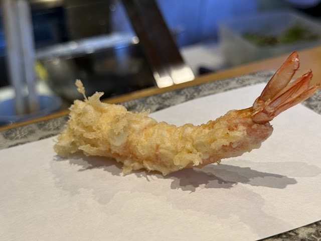
| 営業時間 | 月・火・木・金・土・日 11:30〜14:00, 17:30〜20:30 |
|---|---|
| 定休日 | 水曜 |
| 住所 | 愛知県名古屋市守山区幸心１丁目１３１９ |
| 予約 | 可 — ☎ 052-793-2333 |
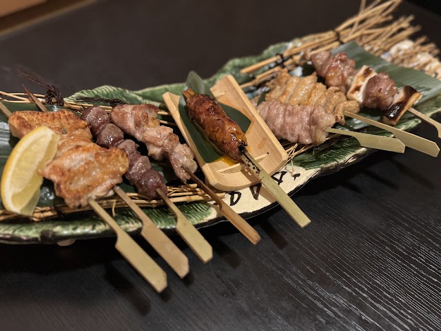
| 営業時間 | 月・火・水・木・日 17:00〜22:00 ／ 金・土 17:00〜23:00 |
|---|---|
| 定休日 | なし(要最終確認) |
| 住所 | 愛知県名古屋市中区錦３丁目１４−２２ 宮木ビル １Ｆ |
| 予約 | 可 — ☎ 052-973-3000 ／ 公式サイト |
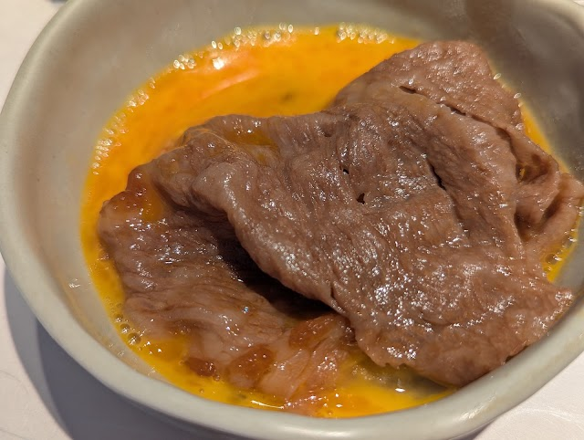
| 営業時間 | 月・火・水・木・金・土・日 11:30〜15:00, 16:30〜22:00 |
|---|---|
| 定休日 | なし(要最終確認) |
| 住所 | 愛知県名古屋市中区栄３丁目１−１ ３５ |
| 予約 | 可 — ☎ 052-261-2065 ／ 公式サイト |
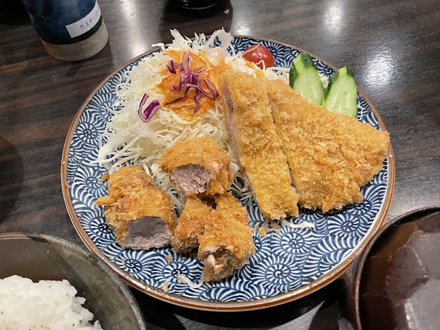
| 営業時間 | 月・水・木・金・土・日 11:00〜14:00, 17:00〜20:30 |
|---|---|
| 定休日 | 火曜 |
| 住所 | 愛知県名古屋市昭和区山花町１１６ |
| 予約 | 可 — ☎ 052-763-2643 ／ 公式サイト |
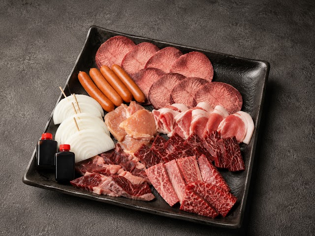
| 営業時間 | 月・火・水・木・金・土・日 16:00〜23:00 |
|---|---|
| 定休日 | なし(要最終確認) |
| 住所 | 愛知県名古屋市北区芦辺町１丁目18−１ |
| 予約 | 可 — ☎ 052-915-9434 ／ 公式サイト |
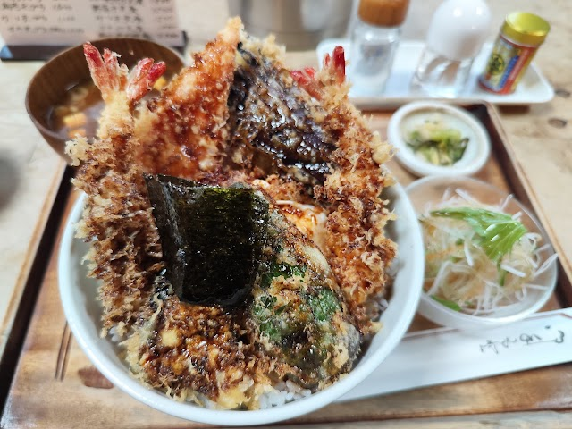
| 営業時間 | 火・水・木・金・土 11:00〜14:00, 17:00〜20:00 |
|---|---|
| 定休日 | 月・日曜 |
| 住所 | 愛知県名古屋市西区上名古屋３丁目１５−１９ |
| 予約 | 可 — ☎ 052-522-9300 ／ 公式サイト |
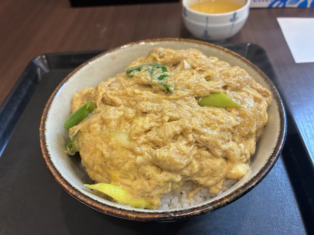
| 営業時間 | 月・火・水・金・土 11:30〜14:20, 17:30〜20:20 ／ 木 11:30〜14:20 |
|---|---|
| 定休日 | 日曜 |
| 住所 | 愛知県名古屋市千種区山門町２丁目４７ |
| 予約 | 要確認 — ☎ 052-751-5512 ／ 公式サイト |
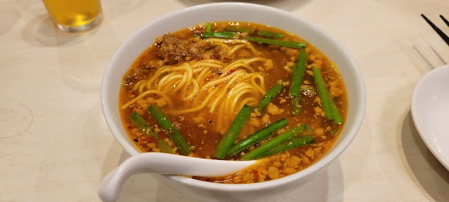
| 営業時間 | 月・火・水・木・金・土・日 17:00〜0:30 |
|---|---|
| 定休日 | なし(要最終確認) |
| 住所 | 愛知県名古屋市千種区今池１丁目１２−１０ |
| 予約 | 可 — ☎ 052-733-7670 ／ 公式サイト |
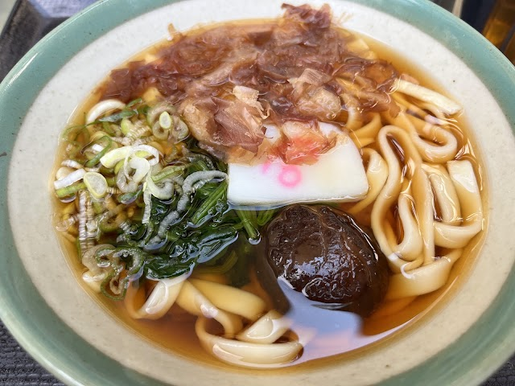
| 営業時間 | 月・火・水・木・金・土・日 9:00〜16:30 |
|---|---|
| 定休日 | なし(要最終確認) |
| 住所 | 愛知県名古屋市熱田区神宮１丁目１−１ 熱田神宮境内 くさなぎ広場 |
| 予約 | 要確認 — ☎ 052-682-6340 ／ 公式サイト |
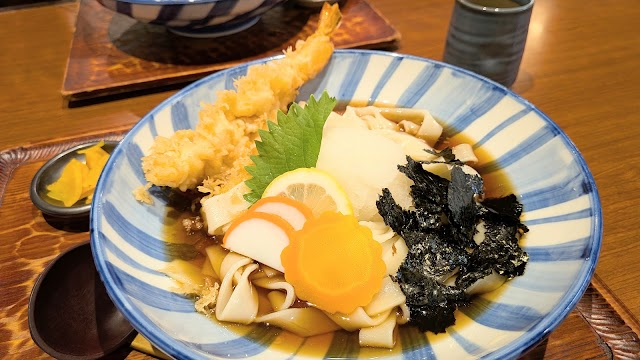
| 営業時間 | 月・火・水・木・金 11:00〜14:00, 17:00〜19:30 ／ 土 11:00〜14:00, 17:00〜19:00 |
|---|---|
| 定休日 | 日曜 |
| 住所 | 愛知県名古屋市東区飯田町３１ |
| 予約 | 要確認 — ☎ 052-931-0474 |
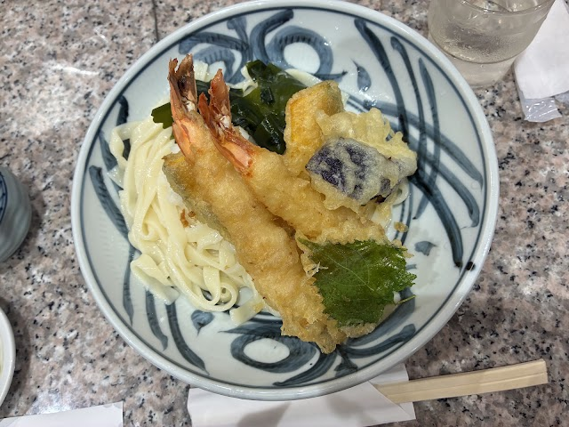
| 営業時間 | 月・火・水・木・金 11:00〜15:00, 17:00〜20:30 ／ 土・日 11:00〜15:00, 17:00〜21:00 |
|---|---|
| 定休日 | なし(要最終確認) |
| 住所 | 愛知県名古屋市中村区椿町６−９ エスカ地下街 |
| 予約 | 要確認 — ☎ 052-452-2875 ／ 公式サイト |
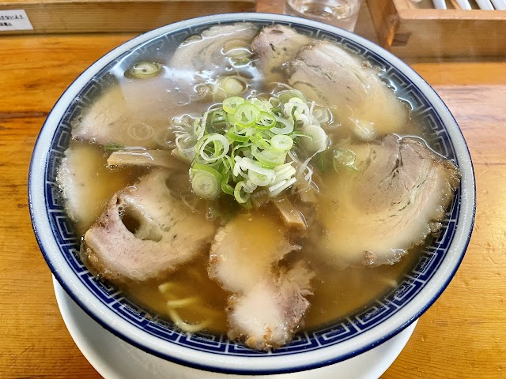
| 営業時間 | 月・火・水・木・金・土 11:00〜14:00 |
|---|---|
| 定休日 | 日曜 |
| 住所 | 愛知県名古屋市千種区春岡通６丁目１−１６ |
| 予約 | 要確認 — ☎ 052-735-3655 ／ 公式サイト |
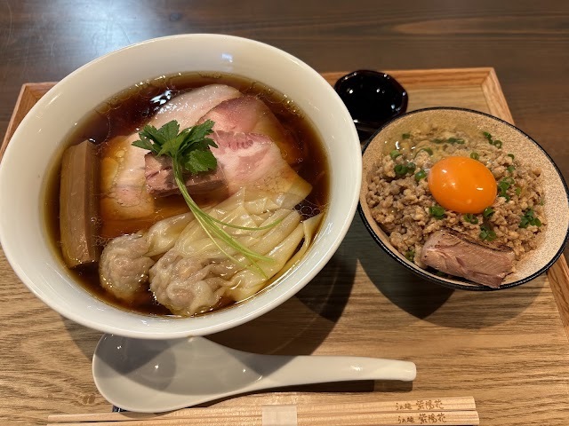
| 営業時間 | 火・水・木・金・土・日 11:00〜15:00 |
|---|---|
| 定休日 | 月曜 |
| 住所 | 愛知県名古屋市中川区八剱町４丁目２０−１ |
| 予約 | 可 — ☎ 052-355-0787 ／ 公式サイト |
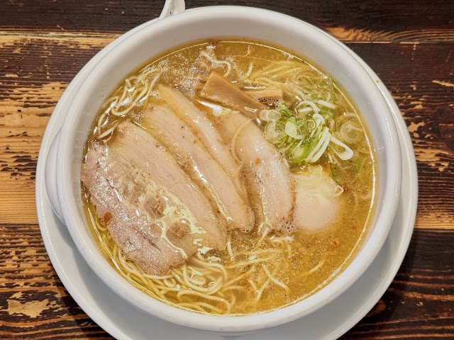
| 営業時間 | 月・水・木・金・土・日 11:00〜14:30, 17:30〜23:00 |
|---|---|
| 定休日 | 火曜 |
| 住所 | 愛知県名古屋市東区徳川町２０１ 日幸ビル １階 |
| 予約 | 要確認 — ☎ 052-937-9228 ／ 公式サイト |
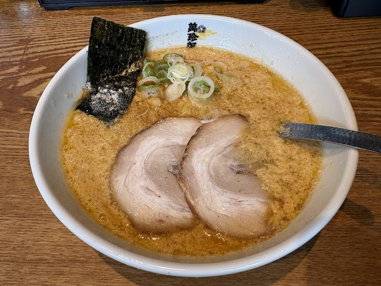
| 営業時間 | 月・水・木 17:00〜0:30 ／ 火・金・土 17:00〜1:00 |
|---|---|
| 定休日 | 日曜 |
| 住所 | 愛知県名古屋市中村区太閤通４丁目３８ |
| 予約 | 要確認 — ☎ 052-481-8824 ／ 公式サイト |
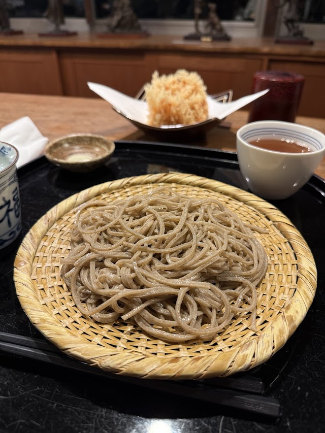
| 営業時間 | 月・火・水・木・金 11:30〜14:00, 17:30〜19:30 ／ 土・日 11:30〜14:00, 17:30〜20:00 |
|---|---|
| 定休日 | なし(要最終確認) |
| 住所 | 愛知県名古屋市南区星崎１丁目１４７−３ |
| 予約 | 可 — ☎ 052-824-7037 ／ 公式サイト |
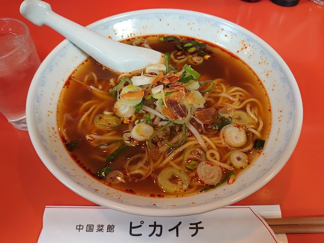
| 営業時間 | 月・火・水・木・金・土 18:00〜23:30 |
|---|---|
| 定休日 | 日曜 |
| 住所 | 愛知県名古屋市千種区今池１丁目１４−５ |
| 予約 | 可 — ☎ 052-731-8413 ／ 公式サイト |
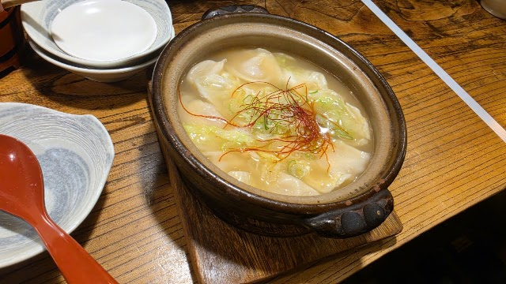
| 営業時間 | 月・火・水・木・金・土・日 17:00〜5:00 |
|---|---|
| 定休日 | なし(要最終確認) |
| 住所 | 愛知県名古屋市中区栄３丁目９−13 地下1階 |
| 予約 | 可 — ☎ 052-241-0041 |
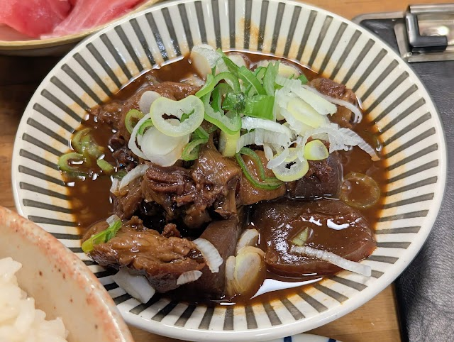
| 営業時間 | 月・火・水・木 10:00〜22:30 ／ 金 10:00〜23:00 ／ 土 9:00〜23:00 ／ 日 9:00〜22:30 |
|---|---|
| 定休日 | なし(要最終確認) |
| 住所 | 愛知県名古屋市中区栄３丁目５−１２ |
| 予約 | 可 — ☎ 052-951-1140 |
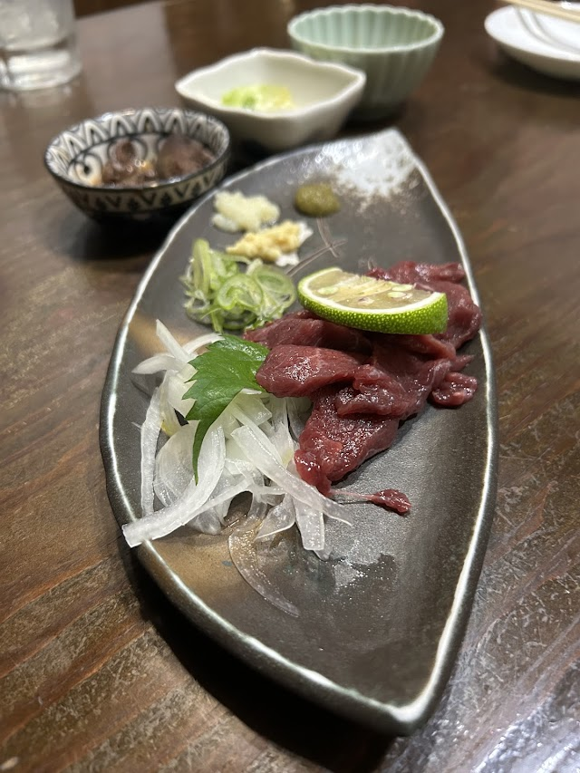
| 営業時間 | 月・火・水・木・金・土・日 17:00〜3:00 |
|---|---|
| 定休日 | なし(要最終確認) |
| 住所 | 愛知県名古屋市中区大須２丁目１１−５ ベルメゾン白川 |
| 予約 | 可 — ☎ 052-221-1308 ／ 公式サイト |
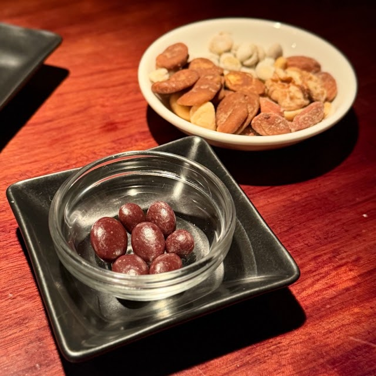
| 営業時間 | 火・水・木・金・土・日 16:00〜0:00 |
|---|---|
| 定休日 | 月曜 |
| 住所 | 愛知県名古屋市中区栄２丁目３−３２ HP広小路ビル ( 旧アマノビル ) B1 |
| 予約 | 可 — ☎ 052-203-1114 ／ 公式サイト |
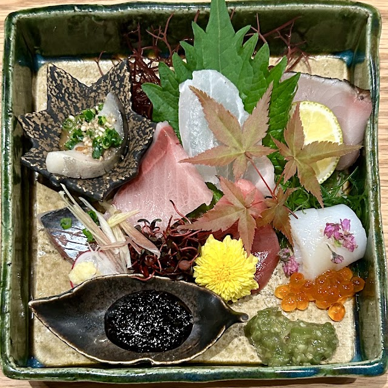
| 営業時間 | 月・火・水・木・金 17:00〜23:30 ／ 土・日 13:00〜23:00 |
|---|---|
| 定休日 | なし(要最終確認) |
| 住所 | 愛知県名古屋市中区栄３丁目１２−６ インペリアルプラザビル 地下１階 |
| 予約 | 可 — ☎ 052-253-8227 ／ 公式サイト |
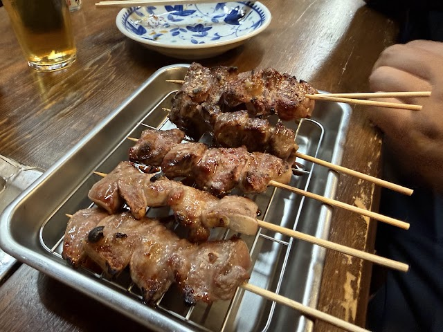
| 営業時間 | 月・火・水・木・金 11:30〜13:30, 17:00〜22:00 ／ 土 16:00〜21:30 |
|---|---|
| 定休日 | 日曜 |
| 住所 | 愛知県名古屋市西区那古野２丁目２０−２１ |
| 予約 | 要確認 — ☎ 052-571-6074 |
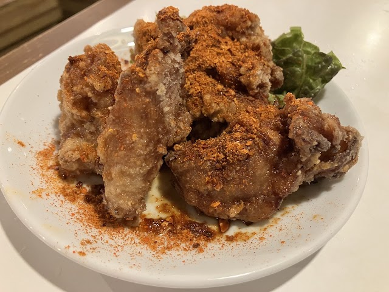
| 営業時間 | 月・火・水・木・金 16:00〜0:00 ／ 土・日 13:00〜0:00 |
|---|---|
| 定休日 | なし(要最終確認) |
| 住所 | 愛知県名古屋市千種区今池１丁目１５−６ 大成ビル 1階 |
| 予約 | 可 — ☎ 052-753-6767 ／ 公式サイト |
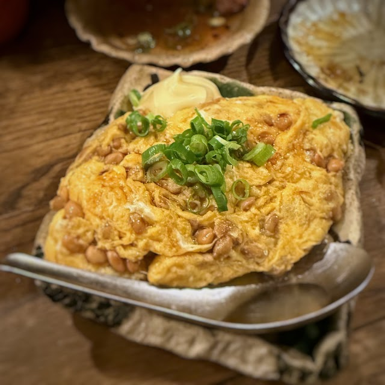
| 営業時間 | 月・火・木・金・土・日 15:00〜0:00 |
|---|---|
| 定休日 | 水曜 |
| 住所 | 愛知県名古屋市中村区名駅南１丁目１０−１９ |
| 予約 | 可 — ☎ 052-581-3101 |
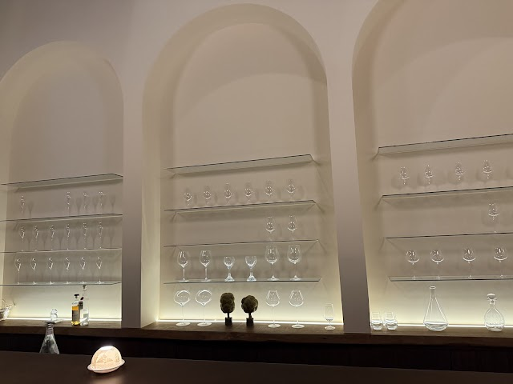
| 営業時間 | 月・火・水・木・金・土・日 21:00〜0:00 |
|---|---|
| 定休日 | なし(要最終確認) |
| 住所 | 愛知県名古屋市東区筒井３丁目１８−３ 北口 |
| 予約 | 可 — ☎ 070-1629-3800 ／ 公式サイト |
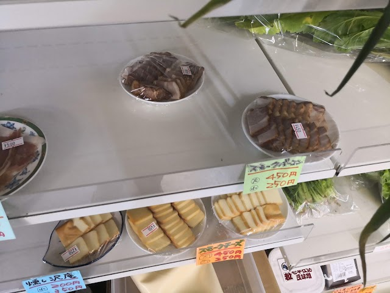
| 営業時間 | 月・火・水・木・金 9:00〜22:00 ／ 土 10:00〜20:00 |
|---|---|
| 定休日 | 日曜 |
| 住所 | 愛知県名古屋市東区矢田１丁目５−３３ |
| 予約 | 要確認 — ☎ 052-722-0308 ／ 公式サイト |
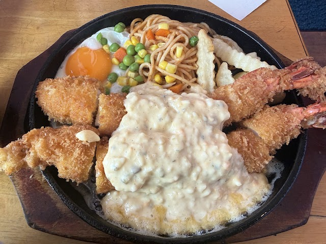
| 営業時間 | 火・水・木・金・土・日 11:00〜14:00, 17:00〜21:00 |
|---|---|
| 定休日 | 月曜 |
| 住所 | 愛知県名古屋市昭和区塩付通２丁目２ メゾンアルファ 1F |
| 予約 | 要確認 — ☎ 052-734-0345 ／ 公式サイト |
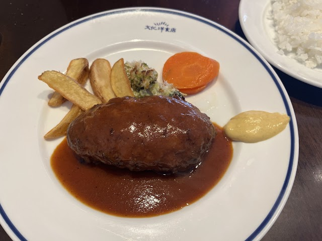
| 営業時間 | 月・火・水・木・金・土・日 11:30〜15:45, 17:00〜22:00 |
|---|---|
| 定休日 | なし(要最終確認) |
| 住所 | 愛知県名古屋市千種区高見１丁目２−１ ＳＫビル １Ｆ |
| 予約 | 可 — ☎ 052-761-2941 ／ 公式サイト |
| 営業時間 | 火・水・木・金・土・日 11:00〜14:30, 17:00〜21:30 |
|---|---|
| 定休日 | 月曜 |
| 住所 | 愛知県名古屋市千種区星が丘元町１−１５ |
| 予約 | 可 — ☎ 052-781-6562 ／ 公式サイト |
| 営業時間 | 11:30〜15:00（L.O.13:00）／17:30〜22:00（L.O.20:00） |
|---|---|
| 定休日 | 不定休 |
| 住所 | 愛知県名古屋市東区主税町４丁目８４ ラ・グランターブル・ドゥ・キタムラ |
| 予約 | 要確認 |
| 営業時間 | 月・火・水・木・金・土・日 12:00〜22:00 |
|---|---|
| 定休日 | なし(要最終確認) |
| 住所 | 愛知県名古屋市東区筒井３丁目１８−３ 南口 |
| 予約 | 可 — ☎ 052-228-8337 ／ 公式サイト |
| 営業時間 | 月・水・木・金・土・日 11:00〜21:15 |
|---|---|
| 定休日 | 火曜 |
| 住所 | 愛知県名古屋市中区大須３丁目３６−４４ |
| 予約 | 可 — ☎ 052-251-0655 ／ 公式サイト |
| 営業時間 | 月・水・木・金・土・日 11:30〜14:30, 17:30〜21:30 |
|---|---|
| 定休日 | 火曜 |
| 住所 | 愛知県名古屋市西区上名古屋２丁目２−２１ 日商岩井第一城北ハイツ 1F |
| 予約 | 可 — ☎ 052-524-9322 ／ 公式サイト |
| 営業時間 | 月・火・水・木・金 11:30〜15:00, 17:30〜22:00 ／ 土 11:30〜15:00 |
|---|---|
| 定休日 | 日曜 |
| 住所 | 愛知県名古屋市中区丸の内２丁目２−２４ |
| 予約 | 可 — ☎ 052-231-6363 |
| 営業時間 | 火・水・木・金 18:00〜22:30 ／ 土・日 12:00〜15:00, 18:00〜22:30 |
|---|---|
| 定休日 | 月曜 |
| 住所 | 愛知県名古屋市千種区末盛通１丁目１ 弘法屋ビル 2F |
| 予約 | 可 — ☎ 052-753-4799 ／ 公式サイト |
| 営業時間 | 月・金・土・日 11:30〜15:00, 18:00〜21:00 ／ 木 18:00〜21:00 |
|---|---|
| 定休日 | 火・水曜 |
| 住所 | 愛知県名古屋市東区主税町３丁目６−２ |
| 予約 | 可 — ☎ 052-936-1477 ／ 公式サイト |
| 営業時間 | 月・火・木・金・土・日 8:00〜17:00 |
|---|---|
| 定休日 | 水曜 |
| 住所 | 愛知県名古屋市西区那古野１丁目３５−１４ |
| 予約 | 要確認 — ☎ 052-551-0669 ／ 公式サイト |
| 営業時間 | 月・火・水・金・土・日 8:00〜18:00 |
|---|---|
| 定休日 | 木曜 |
| 住所 | 愛知県名古屋市西区那古野１丁目３６−５２ |
| 予約 | 要確認 — ☎ 052-433-8188 ／ 公式サイト |
| 営業時間 | 月・火・水・木・金・土・日 8:00〜21:00 |
|---|---|
| 定休日 | なし(要最終確認) |
| 住所 | 愛知県名古屋市東区泉２丁目１−２２ |
| 予約 | 要確認 — ☎ 052-931-0442 ／ 公式サイト |
| 営業時間 | 月・水・木・金・土・日 7:00〜17:00 |
|---|---|
| 定休日 | 火曜 |
| 住所 | 愛知県名古屋市東区徳川２丁目１２−８ |
| 予約 | 要確認 — ☎ 052-935-6128 ／ 公式サイト |
| 営業時間 | 月・火・水・木・金・土・日 7:00〜16:30 |
|---|---|
| 定休日 | なし(要最終確認) |
| 住所 | 愛知県名古屋市中村区名駅５丁目１６−１７ |
| 予約 | 要確認 — ☎ 052-586-0239 ／ 公式サイト |
| 営業時間 | 月・木・金・土・日 7:30〜17:00 ／ 火 7:30〜14:00 |
|---|---|
| 定休日 | 水曜 |
| 住所 | 愛知県名古屋市中村区太閤通６丁目１ |
| 予約 | 要確認 — ☎ 052-482-0001 |
| 営業時間 | 月・火・水・木・金・土・日 8:00〜16:00 |
|---|---|
| 定休日 | なし(要最終確認) |
| 住所 | 愛知県名古屋市中村区名駅南１丁目２４−３０ 三井ビル別館 Ｂ１Ｆ |
| 予約 | 要確認 — ☎ 052-551-3865 |
| 営業時間 | 月・火・水・木・金・土・日 8:00〜19:00 |
|---|---|
| 定休日 | なし(要最終確認) |
| 住所 | 愛知県名古屋市中区大須３丁目２０−１９ |
| 予約 | 要確認 — ☎ 052-241-3883 ／ 公式サイト |
| 営業時間 | 月・火・水・木・金・土 9:30〜17:30 |
|---|---|
| 定休日 | 日曜 |
| 住所 | 愛知県名古屋市中区錦３丁目１３−１２ |
| 予約 | 要確認 — ☎ 052-971-3389 ／ 公式サイト |
| 営業時間 | 月・火・水・木・金・土 9:00〜17:30 |
|---|---|
| 定休日 | 日曜 |
| 住所 | 愛知県名古屋市東区新出来１丁目９−１ 京菓子所芳光ビル |
| 予約 | 要確認 — ☎ 052-931-4432 |
| 営業時間 | 月・火・水・木・金・土・日 8:00〜17:00 |
|---|---|
| 定休日 | なし(要最終確認) |
| 住所 | 愛知県名古屋市千種区末盛通１丁目６−２ |
| 予約 | 要確認 — ☎ 052-751-8025 |
| 営業時間 | 月・火・水・木・金・土・日 8:30〜18:00 |
|---|---|
| 定休日 | なし(要最終確認) |
| 住所 | 愛知県名古屋市熱田区神宮３丁目７−２１ |
| 予約 | 要確認 — ☎ 052-681-6161 ／ 公式サイト |
| 営業時間 | 月・火・木・金・土・日 7:00〜19:00 |
|---|---|
| 定休日 | 水曜 |
| 住所 | 愛知県名古屋市中川区尾頭橋３丁目４−８ |
| 予約 | 要確認 — ☎ 052-321-4671 ／ 公式サイト |
| 営業時間 | 月・火・水・木・金・土・日 10:00〜18:00 |
|---|---|
| 定休日 | なし(要最終確認) |
| 住所 | 愛知県名古屋市中区大須２丁目１８−４２ |
| 予約 | 要確認 — ☎ 052-201-2000 ／ 公式サイト |
| 営業時間 | 月・水・木・金・土・日 10:00〜19:00 |
|---|---|
| 定休日 | 火曜 |
| 住所 | 愛知県名古屋市千種区山門町２丁目５４ |
| 予約 | 要確認 — ☎ 052-762-0007 ／ 公式サイト |
| 営業時間 | 月・火・水・木・金・土・日 8:30〜19:00 |
|---|---|
| 定休日 | なし(要最終確認) |
| 住所 | 愛知県名古屋市名東区社口１丁目９１６ |
| 予約 | 要確認 — ☎ 052-779-0006 ／ 公式サイト |
本ガイドは個人利用目的で作成。掲載情報は2026年9月時点の調査に基づく。写真出典: Google Maps投稿写真(©各投稿者/Google)。